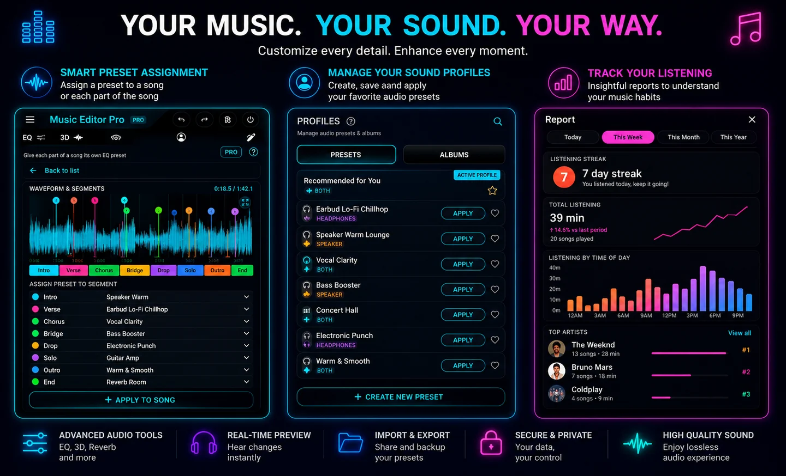
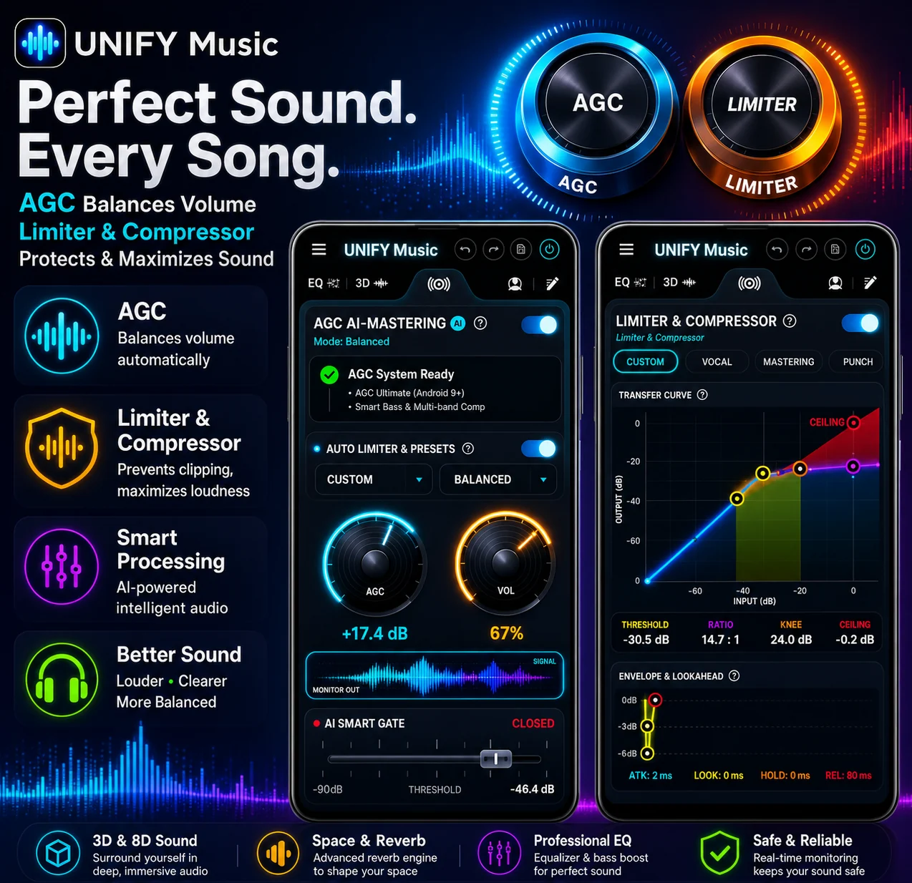
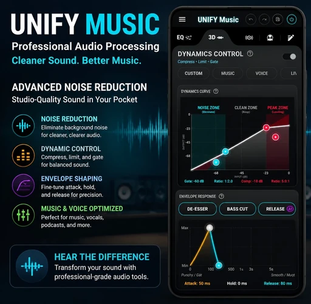
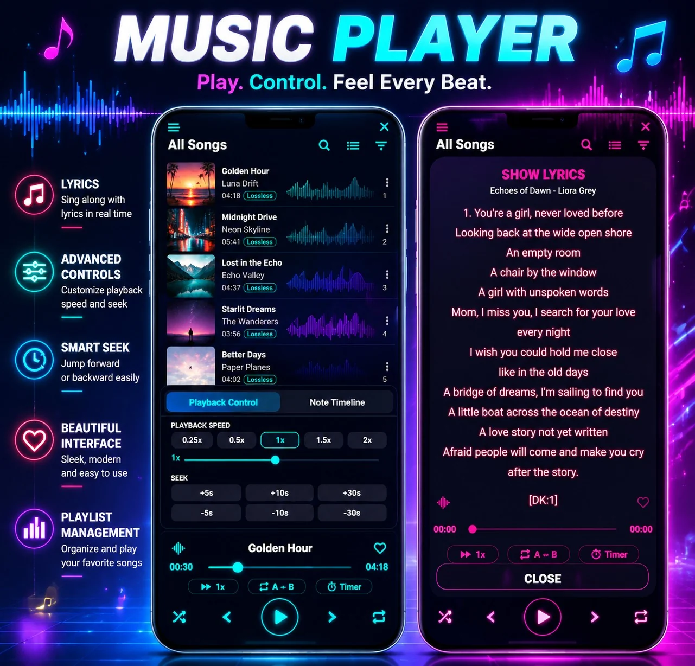
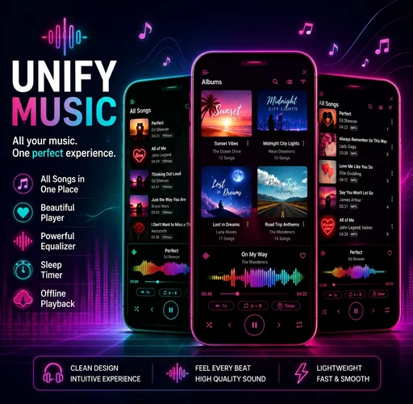
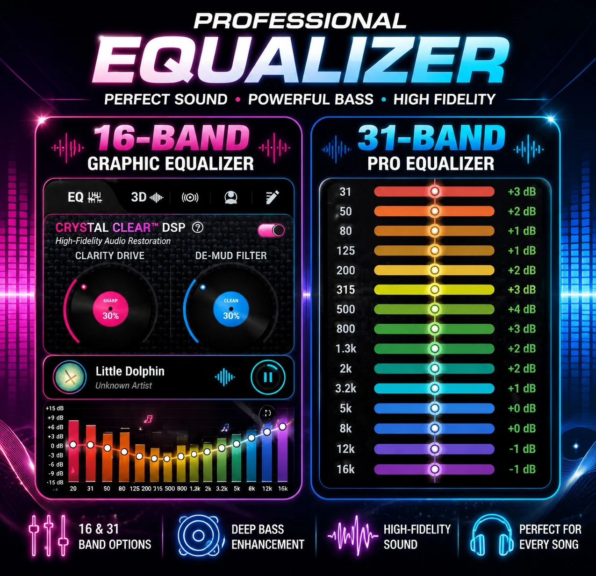

Unified music library
Browse by song, album, artist, genre, folder, playlist and source. Filter by genre, format and storage location.
UNIFY Music brings local audio, Google Drive, Dropbox, WebDAV and SMB/NAS libraries into one refined player — with Hi-Res playback, precision EQ, immersive audio and intelligent caching.
A complete music player for people who own their collection and care about how it sounds — offline, on the road, or connected to a private music source.
Browse by song, album, artist, genre, folder, playlist and source. Filter by genre, format and storage location.
Add personal music from Google Drive, Dropbox, WebDAV servers and SMB/NAS shares without a streaming catalog.
Progressive range loading starts playback sooner, supports seeking and reuses locally cached audio when available.
Use 16-band and 31-band graphic EQ, parametric controls, bass enhancement, presets and detailed DSP tools.
Explore stereo widening, virtualizer, 3D-style motion, reverb environments and real-time visual feedback.
Choose AMOLED, neon, glass, retro and minimal themes, dynamic accents, flexible layouts, lyrics and visualizers.
UNIFY reads your selected music source, builds a local library view and streams or caches audio on your Android device.
Offline playback for music stored on your phone.
Browse a selected folder and play your own audio files.
Connect securely with OAuth and scan personal folders.
Connect compatible HTTPS or HTTP personal servers.
Access SMB2/SMB3 shares on your local network.
Combine genre, audio format and source selections.
Only required audio ranges are requested. Previously downloaded ranges can be reused across playback sessions.
Feature artwork supplied for UNIFY Music. Select any image to view it full size.






UNIFY Music does not sell or provide songs. It is built to play music that you own or are authorized to access from your device, cloud storage or private server.